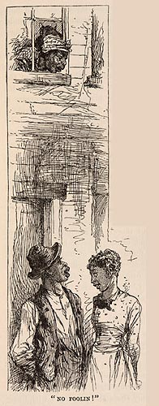

|
 The June installment of "Old Times" focuses on the "rank and dignity" steamboatmen had along the river, and contains the narrative's first (oblique) acknowledgment that crews were made up of "[n]egro firemen, deckhands and barbers." The scene depicted here reflects what "[s]omebody saw and heard" on one of the "back streets" of New Orleans: "A middle-aged negro woman projected her head through a broken pane and shouted (very willing that the neighbors should hear and envy), 'You Mary Ann, come in de house dis minute! Stannin' out dah foolin' 'long wid dat low trash, an' heah's de barber off'n de "Gran' Turk" wants to conwerse wid you!'" Both the text here and the picture use the conventions of minstrel humor to depict slave life, including the mispronunciation of genteel words ("converse") and the comic inflation of their pretentions (the belief that barber is a distinguished social rank). That this scene was seen by an anonymous "somebody" keeps white readers very far away from the world these blacks inhabit. The Barrett Collection, UVA PS1314_A1_1883c |